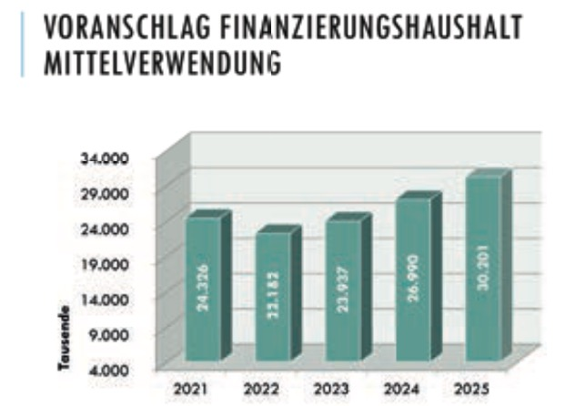
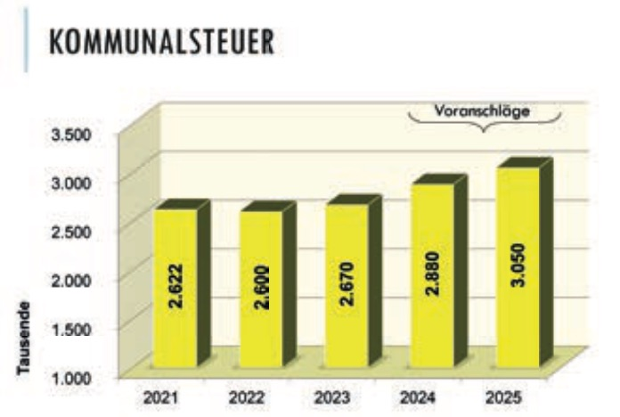

Mit Herz und Hirn für Völs
Bürgermeister Peter Lobenwein
(Beitrag aus der Gemeindezeitung Nr. 1 - Jänner‚ 2025)
Liebe Völserinnen, liebe Völser!
die Budgetsitzung des Gemeinderates ist wohl die wichtigste
Sitzung des ganzen Jahres. Dort werden der Arbeits- und Tätigkeitsbereich und das Arbeitsprogramm für das kommende
Jahr festgelegt und beschlossen.
Am 18. Dezember hat der Gemeinderat ein Budget in der Höhe
von 30,2 Millionen Euro für das Jahr 2025 verabschiedet. In
meinen 20 Jahren im Völser Gemeinderat war dies das schwierigste Budget. Die Haupteinnahmen sind die Ertragsanteile
und die Kommunalsteuer. Der Bund erhebt Steuern, die auf
Gemeinde-, Landes- und Bundesaufgaben verteilt werden.
Diese Einnahmen können mit den inflationsbedingt höheren
Ausgaben nicht mithalten. Die Kommunalsteuer wird von den
Arbeitslöhnen der Unternehmen in der Gemeinde berechnet,
gut zahlende Betriebe geben der Gemeinde mehr Spielraum.
Aufgrund der Wirtschaftslage und des zu erwartenden Sparkurses des Bundes wird die Lücke zwischen Einnahmen und
Ausgaben größer, das geht fast allen Gemeinden so.

Trotzdem müssen wir unaufschiebbare Investitionen vornehmen. Der größte „Brocken“ mit über 2 Millionen Euro ist
der Neubau des Tiefbrunnens. Eine Investition zur Sicherung einer qualitätsvollen Trinkwasserversorgung. Ein Darlehen
von € 700.000,– muss dabei eingeplant werden. Das Pumpwerk zur Abwasserversorgung in Werth muss alternativlos
für fast 1 Million Euro saniert bzw. neu gebaut werden. Beim Bildungsstandort Dorf (Volksschule, Kindergarten, Kinderkrippe,
Nachmittagsbetreuung...) sind die nächsten Umsetzungsschritte notwendig – Kosten für 2025: € 500.000,–.
Der weitere Ausbau der Photovoltaikanlagen (Gesundheitsdienste, Feuerwehr) und der Ankauf eines E-Fahrzeuges
(Recyclinghof) sind mit € 160.000,– im Budget festgelegt. Die Dachsanierung der Mittelschule wird 2025 erfolgen, damit
auch hier im Folgejahr eine PV-Anlage installiert werden kann. Die Elektrotechnik der Mittelschule muss ebenfalls erneuert
werden – Gesamtkosten von € 220.000,–.
Dies sind die größeren Vorhaben, die 2025 umgesetzt werden sollen bzw. müssen. Für weitere Projekte sind derzeit keine finanziellen Mittel vorhanden.
Unser Voranschlag stellt jedoch sicher, dass eine hohe Qualität in der Kinderbetreuung und Altersvorsorge gewährleistet
bleibt. Die soziale Sicherheit in Notsituationen, Mietzinsbeihilfe und vieles mehr wird ebenfalls durch das Budget abgedeckt.

Auch die finanzielle Unterstützung unserer Vereine bleibt bestehen, als Wertschätzung für die gute Vereins- und Jugendarbeit,
die wesentlich zu einem guten Miteinander in der Gemeinde beiträgt.
Das Budget steht und ich danke allen, die mit viel Verantwortungsbewusstsein für die Zukunft dazu beigetragen haben, allen
Ausschüssen und deren Obleuten und besonders unserer Leiterin der Finanzverwaltung Astrid Landauer sowie der Obfrau des
Finanzausschusses, Vizebürgermeisterin Silvia Pöhli.
Eine große Bitte habe ich noch zum Jahreswechsel: Verzichten wir auf die „Silvester- und Neujahrskracherei“. Das
tut den Menschen, den Tieren und der Umwelt gut! Spenden wir das Geld einem Menschen, der es nicht so leicht im Leben
hat – danke!
Nicht zuletzt wünsche ich euch allen „a guets noies Johr“ verbunden mit Gesundheit und Freude am Leben.

(Ursprung der Bilder aus der Gemeindezeitung Nr. 1 - Jänner 2025)